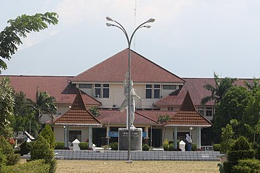

Sejarah
Mengawali cerita sejarah ini sebagai Purwadaksina, Purwa Kawitan Daksina Kawekasan, tersebutlah kerajaan besar di kawasan barat pulau Jawa PAKUAN PAJAJARAN yang Gemah Ripah Repeh Rapih Loh Jinawi Subur Kang Sarwa Tinandur Murah Kang Sarwa Tinuku, Kaloka Murah Sandang Pangan Lan Aman Tentrem Kawontenanipun. Dengan Rajanya JAYA DEWATA bergelar SRI BADUGA MAHARAJA PRABU SILIWANGIRaja Agung, Punjuling Papak, Ugi Sakti Madraguna, Teguh Totosane Bojona Kulit Mboten Tedas Tapak Paluneng Pande, Dihormati, disanjung Puja rakyatnya dan disegani oleh lawan-lawannya.
Raja Jaya Dewata menikah dengan Nyai Subang Larang dikarunia 2 (dua) orang putra dan seorang putri, Pangeran Walangsungsang yang lahir pertama tahun 1423 Masehi, kedua Nyai Lara Santang lahir tahun 1426 Masehi. Sedangkan Putra yang ketiga Raja Sengara lahir tahun 1428 Masehi. Pada tahun 1442 Masehi Pangeran Walangsungsang menikah dengan Nyai Endang Geulis Putri Ki Gedheng Danu Warsih dari Pertapaan Gunung Mara Api.
Mereka singgah di beberapa petapaan antara lain petapaan Ciangkup di Desa Panongan (Sedong), Petapaan Gunung Kumbang di daerah Tegal dan Petapaan Gunung Cangak di Desa Mundu Mesigit, yang terakhir sampe ke Gunung Amparan Jati dan disanalah bertemu dengan Syekh Datuk Kahfi yang berasal dari kerajaan Parsi. Ia adalah seorang Guru Agama Islam yang luhur ilmu dan budi pekertinya. Pangeran Walangsungsang beserta adiknya Nyai Lara Santang dan istrinya Nyai Endang Geulis berguru Agama Islam kepada Syekh Nur Jati dan menetap bersama Ki Gedheng Danusela adik Ki Gedheng Danuwarsih. Oleh Syekh Nur Jati, Pangeran Walangsungsang diberi nama Somadullah dan diminta untuk membuka hutan di pinggir Pantai Sebelah Tenggara Gunung Jati (Lemahwungkuk sekarang). Maka sejak itu berdirilah Dukuh Tegal Alang-Alang yang kemudian diberi nama Desa Caruban (Campuran) yang semakin lama menjadi ramai dikunjungi dan dihuni oleh berbagai suku bangsa untuk berdagang, bertani dan mencari ikan di laut.
Danusela (Ki Gedheng Alang-Alang) oleh masyarakat dipilih sebagai Kuwu yang pertama dan setelah meninggal pada tahun 1447 Masehi digantikan oleh Pangeran Walangsungsang sebagai Kuwu Carbon yang kedua bergelar Pangeran Cakrabuana. Atas petunjuk Syekh Nur Jati, Pangeran Walangsungsang dan Nyai Lara Santang menunaikan ibadah haji ke Tanah Suci Mekah.
Pangeran Walangsungsang mendapat gelar Haji Abdullah Iman dan adiknya Nyai Lara Santang mendapat gelar Hajah Sarifah Mudaim, kemudian menikah dengan seorang Raja Mesir bernama Syarif Abullah. Dari hasil perkawinannya dikaruniai 2 (dua) orang putra, yaitu Syarif Hidayatullah dan Syarif Nurullah. Sekembalinya dari Mekah, Pangeran Cakrabuana mendirikan Tajug dan Rumah Besar yang diberi nama Jelagrahan, yang kemudian dikembangkan menjadi Keraton Pakungwati (Keraton Kasepuhan sekarang) sebagai tempat kediaman bersama Putri Kinasih Nyai Pakungwati. Stelah Kakek Pangeran Cakrabuana Jumajan Jati Wafat, maka Keratuan di Singapura tidak dilanjutkan (Singapura terletak + 14 Km sebelah Utara Pesarean Sunan Gunung Jati) tetapi harta peninggalannya digunakan untuk bangunan Keraton Pakungwati dan juga membentuk prajurit dengan nama Dalem Agung Nyi Mas Pakungwati. Prabu Siliwangi melalui utusannya, Tumenggung Jagabaya dan Raja Sengara (adik Pangeran Walangsungsang), mengakat Pangeran Carkrabuana menjadi Tumenggung dengan Gelar Sri Mangana.
Pada Tahun 1470 Masehi Syarif Hiyatullah setelah berguru di Mekah, Bagdad, Campa dan Samudra Pasai, datang ke Pulau Jawa, mula-mula tiba di Banten kemudian Jawa Timur dan mendapat kesempatan untuk bermusyawarah dengan para wali yang dipimpin oleh Sunan Ampel. Musyawarah tersebut menghasilkansuatu lembaga yang bergerak dalam penyebaran Agama Islam di Pulau Jawa dengan nama Wali Sanga.
Sebagai anggota dari lembaga tersebut, Syarif Hidayatullah datang ke Carbon untuk menemui Uwaknya, Tumenggung Sri Mangana (Pangeran Walangsungsang) untuk mengajarkan Agama Islam di daerah Carbon dan sekitarnya, maka didirikanlah sebuah padepokan yang disebut pekikiran (di Gunung Sembung sekarang)
Setelah Sunan Ampel wafat tahun 1478 Masehi, maka dalam musyawarah Wali Sanga di Tuban, Syarif Hidayatullah ditunjuk untuk menggantikan pimpinan Wali Sanga. Akhirnya pusat kegiatan Wali Sanga dipindahkan dari Tuban ke Gunung Sembung di Carbon yang kemudian disebut puser bumi sebagai pusat kegiatan keagamaan, sedangkan sebagai pusat pemerintahan Kesulatan Cirebon berkedudukan di Keraton Pakungwati dengan sebutan GERAGE. Pada Tahun 1479 Masehi, Syarif Hidayatullah yang lebih kondang dengan sebutan Pangeran Sunan Gunung Jati menikah dengan Nyi Mas Pakungwati Putri Pangeran Cakrabuana dari Nyai Mas Endang Geulis. Sejak saat itu Pangeran Syarif Hidayatullah dinobatkan sebagai Sultan Carbon I dan menetap di Keraton Pakungwati.
Sebagaimana lazimnya yang selalu dilakukan oleh Pangeran Cakrabuana mengirim upeti ke Pakuan Pajajaran, maka pada tahun 1482 Masehi setelah Syarif Hidayatullah diangkat menajdi Sulatan Carbon membuat maklumat kepada Raja Pakuan Pajajaran PRABU SILIWANGI untuk tidak mengirim upeti lagi karena Kesultanan Cirebon sudah menjadi Negara yang Merdeka. Selain hal tersebut Pangeran Syarif Hidayatullah melalui lembaga Wali Sanga rela berulangkali memohon Raja Pajajaran untuk berkenan memeluk Agama Islam tetapi tidak berhasil. Itulah penyebab yang utama mengapa Pangeran Syarif Hidayatullah menyatakan Cirebon sebagai Negara Merdeka lepas dari kekuasaan Pakuan Pajajaran.
Peristiwa merdekanya Cirebon keluar dari kekuasaan Pajajaran tersebut, dicatat dalam sejarah tanggal Dwa Dasi Sukla Pakca Cetra Masa Sahasra Patangatus Papat Ikang Sakakala, bertepatan dengan 12 Shafar 887 Hijiriah atau 2 April 1482 Masehi yang sekarang diperingati sebagai hari jadi Kabupaten Cirebon
